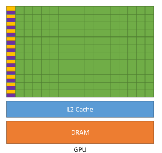
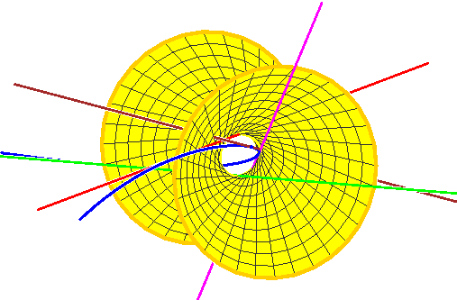

Research

Dynamic VIX-Based Hedging of Equity Risk during Market Stress Events
Designed and backtested a dynamic volatility-based hedge for equity portfolios using VIX-linked instruments during macro-driven stress regimes.

CUDA-accelerated Monte Carlo for Exotic Option Pricing
Implemented high-performance Monte Carlo pricing algorithms for exotic options in C++ and CUDA, achieving over 100× speedup versus CPU baselines.

Equities Portfolio Optimization using James–Stein Shrinkage
Studied covariance shrinkage techniques for mean–variance portfolio optimization and evaluated their out-of-sample risk–return performance.

Numerical and Monte Carlo Algorithms Library (MATLAB & Julia)
Developed a reusable library of numerical analysis and Monte Carlo algorithms with emphasis on stability, convergence, and reproducibility.

Schubert Calculus and the Cohomology of the Grassmannian
Conducted undergraduate thesis research on intersection theory and Schubert calculus, culminating in a defended thesis presentation.